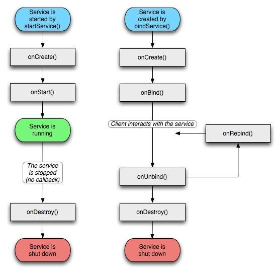
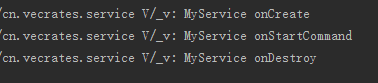
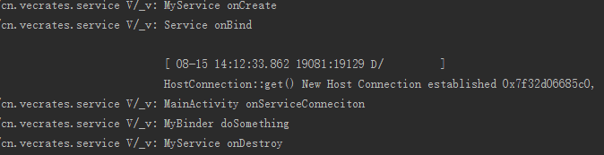
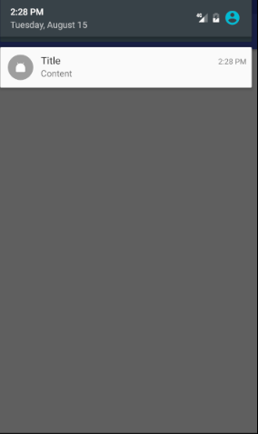

【Android 笔记】Serviece
Service，四大组件之一，没有 UI 界面，在后台保持运行做一些耗时的操作。Service 可以在程序退出的情况下保持运行状态。
生命周期
Service 的创建方式有两种：

startService()
以这种方式创建的 Service，创建之后 Service 与创建者无关，Service 将保持独立地运行，即使创建者不存在，Service 也可以存在，直到使用 stopService() （stopService 可以不在创建者上使用）或者 stopSelf() 结束 Service。
这种方式 Service 将以此调用 onCreate()、onStartCommand() 和 onDestroy() 三种方法，其中 onCreate() 、onDestroy() 只调用一次，onStartCommand() 调用的次数和使用 startService() 的次数相等。
bindService()
bindService() 方式可以将开启服务的对象绑定，Service 的生命周期收该对象影响，如果该对象不存在，Service 也将消亡，可以使用 unbindService() 来解绑该服务（Service 将结束运行）。
需要重写 onBind() 方法并返回一个非 NULL 的 IBinder 对象才成功和绑定对象连接成功。绑定对象也需要创建一个 ServiceConnetion 对象来关联Service。
Service 的使用
1）Activity
public class MainActivity extends AppCompatActivity {
//bindService 时使用
private ServiceConnection mServiceConnection = new ServiceConnection() {
//与Service连接成功时
@Override
public void onServiceConnected(ComponentName componentName, IBinder iBinder) {
Log.v("_v", "MainActivity onServiceConneciton");
MyService.MyBinder myBinder = (MyService.MyBinder) iBinder;
myBinder.doSomething(); //调用 Service 执行
unbindService(mServiceConnection); //解绑
}
//与Service断开连接时
@Override
public void onServiceDisconnected(ComponentName componentName) {
Log.v("_v", "MainActivity onServiceDisconnection");
}
};
@Override
protected void onCreate(Bundle savedInstanceState) {
super.onCreate(savedInstanceState);
setContentView(R.layout.activity_main);
Intent intent = new Intent(this, MyService.class);
startService(intent); //startService 方式
try {
Thread.currentThread().sleep(5000);
} catch (InterruptedException e) {
e.printStackTrace();
} finally {
stopService(intent);
}
// bindService(intent, mServiceConnection, BIND_AUTO_CREATE); //bindService 方式
// unbindService(mServiceConnection);
}
}
2）Service，需在 Manifest 注册
public class MyService extends Service {
//每次开启或绑定Service都会执行，且只执行一次
@TargetApi(Build.VERSION_CODES.JELLY_BEAN)
@Override
public void onCreate() {
Log.v("_v", "MyService onCreate");
}
/**
* 这个整形可以有四个返回值：start_sticky、start_no_sticky、START_REDELIVER_INTENT、START_STICKY_COMPATIBILITY。
它们的含义分别是：
1):START_STICKY：如果service进程被kill掉，保留service的状态为开始状态，但不保留递送的
intent对象。随后系统会尝试重新创建service，由于服务状态为开始状态，所以创建服务后一定会调
用onStartCommand(Intent,int,int)方法。如果在此期间没有任何启动命令被传递到service，那么
参数Intent将为null。
2):START_NOT_STICKY：“非粘性的”。使用这个返回值时，如果在执行完onStartCommand后，服务
被异常kill掉，系统不会自动重启该服务
3):START_REDELIVER_INTENT：重传Intent。使用这个返回值时，如果在执行完onStartCommand后，
服务被异常kill掉，系统会自动重启该服务，并将Intent的值传入。
4):START_STICKY_COMPATIBILITY：START_STICKY的兼容版本，但不保证服务被kill后一定能重启。
*/
//startService()时才会调用，且与startService次数一致
@Override
public int onStartCommand(Intent intent, int flags, int startId) {
Log.v("_v", "MyService onStartCommand ");
return super.onStartCommand(intent, flags, startId);
}
//只执行一次
@Override
public void onDestroy() {
Log.v("_v", "MyService onDestroy");
}
//bindService()时才会调用，当此方法返回非NULL得IBinder时才能建立连接
@Nullable
@Override
public IBinder onBind(Intent intent) {
Log.v("_v", "Service onBind");
return new MyBinder();
}
class MyBinder extends Binder {
public void doSomething() {
Log.v("_v" ,"MyBinder doSomething");
}
}
}
3）结果


使 Service 在前台运行
后台运行的 Service 在内存不足时很可能被系统回收，为了满足需要，可以把 Service 设置成前台。前台 Service 会在状态栏有信息显示。
在之前的代码之上（onCreate() 或 onStartCommand()）添加如下代码，创建一个通知
Notification.Builder builder = new Notification.Builder(getApplicationContext());
Intent intent = new Intent(this, MainActivity.class);
PendingIntent pendingIntent = PendingIntent.getActivity(this, 0, intent, 0);
builder.setContentIntent(pendingIntent )
.setSmallIcon(R.mipmap.ic_launcher)
.setContentTitle("Title")
.setContentText("Content")
.setWhen(System.currentTimeMillis()); //通知发生的时间
Notification notification = builder.build();
notification.defaults = Notification.DEFAULT_SOUND; //默认的声音
startForeground(1000, notification);
//stopForegroud 结束
